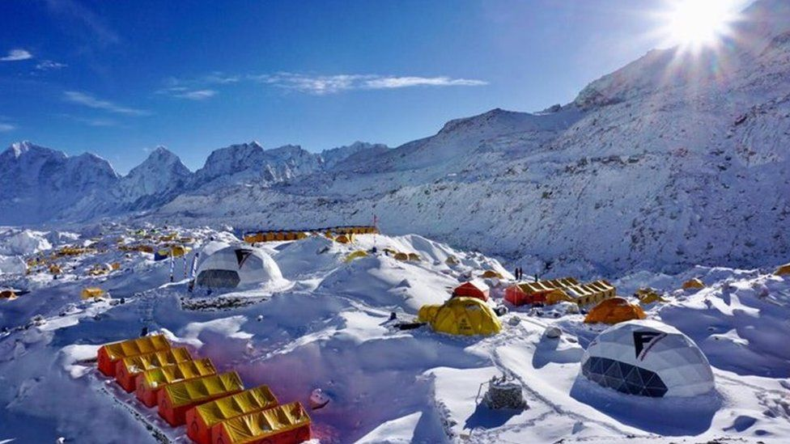
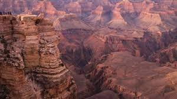

One of life's great thrills is descending from the Inca Trail into Machu Pichu at sunrise. The Inca Trail is a 42-kilometer (26-mile) walk that takes you up over two 13,000-foot passes and is not for the faint of heart.
The pathway follows the path taken by the Incas over 650 years ago, with most of the original stonework still visible. You'll pass through two Inca tunnels, the ancient ruin of Winay Wayna, and numerous waterfalls along the way.
This is a strenuous hike that takes four days to complete in inclement weather. It can be hot and humid, raining heavily, scorching hot, and even chilly at times. Make sure you're ready for any type of weather.

2. Everest Base Camp, Nepal
The Everest Base Camp climb may possibly be described in two words: up and down (EBC). This 65-kilometer one-way track climbs a mountain ridge, descends to a river, and then climbs another mountain ridge on its way to base camp.
The trip takes 12 to 14 days on average and is strenuous, reaching a maximum elevation of 5,500 metres (18,044 feet). However, the majority of the trekking takes place between 3,500 and 4,500 metres (11,482 and 4,763 feet). The air is thin up here, making any exertion seem twice as difficult.
3. Samaria Gorge, Greece
The Samaria Gorge trek is one of Crete's top attractions and the best hike on the island. This one-way trip begins in pine woodlands and descends through a small valley before reaching the Libyan Sea. The trip is little over 16 kilometres long, with a total elevation gain of over 1,500 metres.
The first hour of the trip is the most difficult, as you descend a lengthy series of switchbacks before reaching the torrent that created this amazing gorge. The terrain levels out at this point, and the final 13 kilometres or so are a reasonably pleasant stroll.
4. Cinque Terre Hike, Italy
The Cinque Terre hike is an easy day hike between settlements located on the steep seaside mountains that has long been regarded as one of Italy's most picturesque climbs. The brilliant blue waters of the Mediterranean Sea below you will make you forget about the work you put in while strolling along this old road.
Starting at Monterosso and ending in Riomaggiore is the finest route to undertake the Cinque Terre trip. Take your time and stop for a coffee and biscotti in the middle of the morning, then continue walking before stopping for a delicious lunch. Take a break from your lunch spot's view and continue walking till you feel the need for an afternoon cappuccino.

5. Bright Angel Trail, Grand Canyon NP, USA
A hiking trail winding down the cliffside across a large plain and then dropping down again towards the Colorado River may be seen when you gaze over the Grand Canyon rim. The Bright Angel Trail is a world-famous hiking trail.
This 25-kilometer (15.6-mile) trail descends 1,340 metres (4,380 feet) from the south canyon rim to the water's edge at Phantom Ranch and Bright Angel Campground. The vistas along the trail across and down the canyon are breathtaking, and many people hike parts of it in a day. If this is your plan, the park service recommends staying no further than Indian Springs.